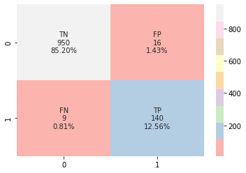

수업
히트맵에 숫자가 클 때 e로 표시되지 않게 하려면 옵션에 fmt=‘.0f’ 추가
히트맵에 문자와 값 표시하기
import seaborn as sns
cf_matrix = confusion_matrix(y_test, pred)
group_names = ['TN','FP','FN','TP']
group_counts = ["{0:0.0f}".format(value) for value in cf_matrix.flatten()]
group_percentages = ["{0:.2%}".format(value) for value in
cf_matrix.flatten()/np.sum(cf_matrix)]
labels = [f"{v1}\n{v2}\n{v3}" for v1, v2, v3 in
zip(group_names, group_counts, group_percentages)]
labels = np.asarray(labels).reshape(2,2)
sns.heatmap(cf_matrix, cmap='Pastel1', annot=labels, fmt='')
개인 공부
- 머신 러닝의 모델 평가와 모델 선택, 알고리즘 선택 – 1장. 기초
- 머신 러닝의 모델 평가와 모델 선택, 알고리즘 선택 – 2장. 부트스트래핑과 불확실성
- 머신 러닝의 모델 평가와 모델 선택, 알고리즘 선택 – 3장. 크로스밸리데이션과 하이퍼파라미터 튜닝
- “머신러닝 교과서 with 파이썬, 사이킷런, 텐서플로(세바스찬 라시카)” 4장 전처리
- 알고리즘 큐 “프린터”를 풀었다